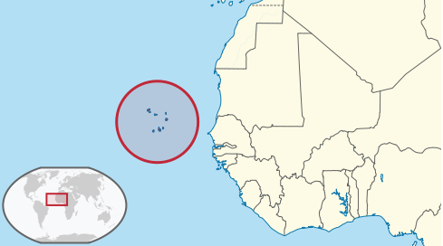

Sal is an island which is part of Cape Verde also knows as Cabo Verde. it is a group of 10 islands off the coast of Africa. Cape Verde is not a well-known place and has only started to become a known holiday destination because of the many flights that TUI now provide. Because of this the islands are not built up or commercialised and have a very rustic feel which is perfect for a retreat from normal life. the islands were discovered by Portuguese sailors who named each of the islands. Sal got its name due to the salt mines that are there which are open for visitors to swim in.
The islands busiest town is called Santa Maria, it sits along the southern point of the island and is the main tourist area. It is filled with restaurants, cafes, shops, and hotels. Santa Maria is also very popular for its wind surfing and kite surfing due to the strong winds that come off the Atlantic. The famous Kite beach has hundreds of surfers at one time in the water. There are also other attractions in the town like the famous pier that hosts a fresh fish market every morning after the fishermen get back from an early morning trip.